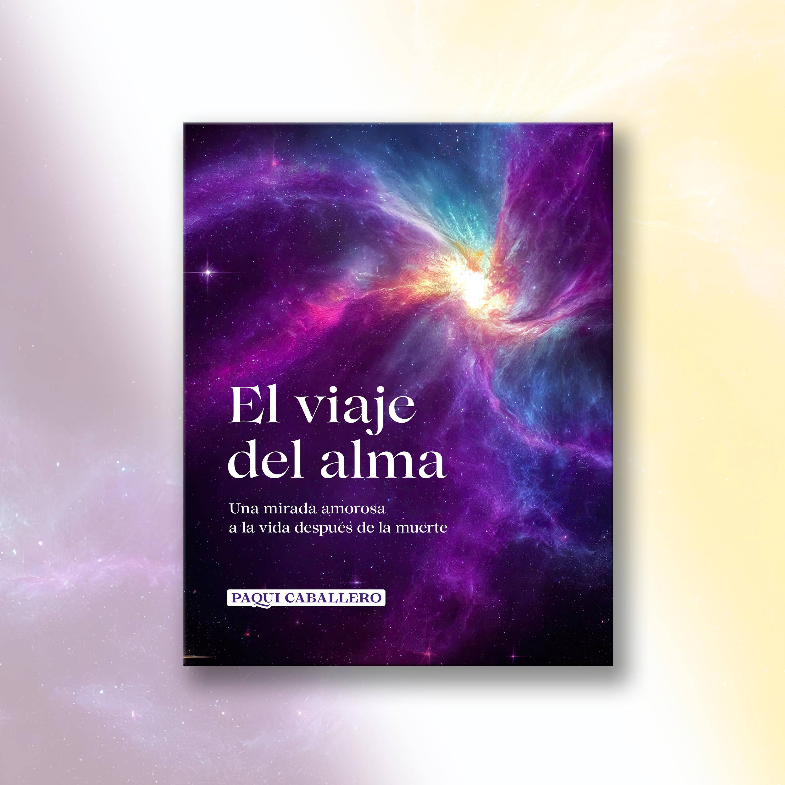

Te sientes perdida dentro de tu propia vida
No sabes exactamente en qué momento te desconectaste de ti, pero sientes que algo ya no encaja y no puedes seguir ignorándolo.
Un primer paso suave para volver a ti
El viaje del alma nace para acompañar a personas que sienten que algo dentro se ha roto, se ha apagado o se ha perdido por el camino. Es una lectura para darte comprensión, consuelo y una forma más amorosa de mirar tu proceso.

Este libro puede ser una forma suave de empezar a mirarte, comprenderte y volver un poco más a ti.
Quizá te pasa esto
No sabes exactamente en qué momento te desconectaste de ti, pero sientes que algo ya no encaja y no puedes seguir ignorándolo.
Hay heridas, pérdidas, relaciones o duelos que siguen viviendo dentro de ti y que quizá nunca has podido mirar con calma de verdad.
Has estado pendiente de todo y de todos, y ahora sientes una llamada interna a volver a ti, aunque todavía no sepas cómo hacerlo.
Lo que este libro puede darte
Este libro está pensado para ayudarte a parar un momento, reconocerte en sus páginas y sentir que lo que vives tiene sentido, nombre y un camino posible de transformación.
Entender mejor lo que sientes cuando por dentro todo parece confuso.
Sentir alivio al descubrir que lo que te pasa no es locura ni debilidad.
Volver a mirarte con más amor, verdad y profundidad en un momento delicado.
Un espacio para parar
Este libro te invita a abrir ese espacio con calma: a escucharte, a dar un poco de luz a lo que sientes y a acercarte a tu propio proceso sin exigencias.
Qué encontrarás dentro
“Un relato que puede ayudarte a comprender tu dolor desde un lugar más profundo y menos duro contigo.”
Lectura para momentos de cambio
“Un espacio íntimo para reconectar con preguntas, emociones y partes de ti que quizá habías dejado muy atrás.”
Lectura para volver a ti
Consíguelo en Amazon
Puedes leer su ficha, ver el precio actualizado y pedirlo directamente desde allí, con la tranquilidad de hacerlo a tu ritmo.